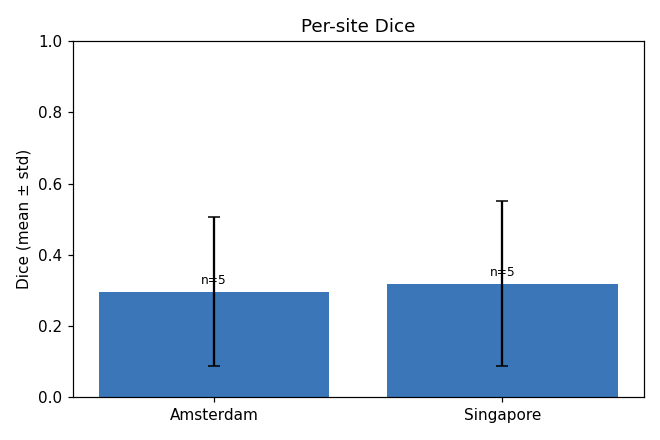
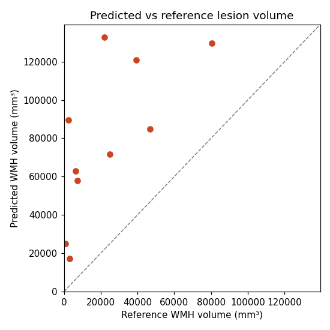

Subjects: 10
Mean Dice: 0.3082 (median 0.2418, min 0.0387, max 0.6994)
Predicted/reference volume ratio: 10.3783 (median 5.8368)
| Baseline | Mean Dice | Median Dice | Mean volume ratio | Mean FP voxels | Mean FN voxels | Model wins | Baseline wins | Ties |
|---|---|---|---|---|---|---|---|---|
| all_zero | 0.0000 | 0.0000 | 0.0000 | 0 | 7216 | 10 | 0 | 0 |
| all_positive | 0.0051 | 0.0031 | 2043.3791 | 2820560 | 0 | 10 | 0 | 0 |
| spatial_prior_only | 0.0498 | 0.0321 | 3.1909 | 3683 | 6809 | 10 | 0 | 0 |


| Subject | Site | Dice | Raw voxels | Lesions | Predicted vol (mm³) | Reference vol (mm³) | FP voxels | FN voxels | Volume ratio |
|---|---|---|---|---|---|---|---|---|---|
| Amsterdam_GE3T_111 | Amsterdam | 0.2757 | 38,533 | 23 | 132,691.8 | 22,082.5 | 31,673 | 212 | 6.0089 |
| Singapore_70 | Singapore | 0.2079 | 20,245 | 46 | 57,774.0 | 7,368.0 | 17,001 | 199 | 7.8412 |
| Amsterdam_GE3T_117 | Amsterdam | 0.5928 | 24,920 | 31 | 84,740.4 | 46,907.3 | 13,004 | 2,243 | 1.8066 |
| Singapore_71 | Singapore | 0.4551 | 24,993 | 47 | 71,804.9 | 24,843.0 | 16,605 | 951 | 2.8904 |
| Amsterdam_GE3T_118 | Amsterdam | 0.0387 | 26,675 | 56 | 89,616.7 | 2,415.3 | 24,983 | 180 | 37.1033 |
| Singapore_72 | Singapore | 0.6994 | 44,185 | 28 | 129,765.1 | 80,511.1 | 18,745 | 2,327 | 1.6118 |
| Amsterdam_GE3T_119 | Amsterdam | 0.4644 | 35,091 | 29 | 120,755.8 | 39,267.5 | 23,778 | 600 | 3.0752 |
| Singapore_73 | Singapore | 0.0499 | 9,152 | 43 | 25,080.0 | 903.0 | 8,144 | 85 | 27.7741 |
| Amsterdam_GE3T_120 | Amsterdam | 0.1136 | 19,055 | 70 | 63,013.0 | 6,296.7 | 16,803 | 671 | 10.0073 |
| Singapore_74 | Singapore | 0.1848 | 6,810 | 70 | 17,334.0 | 3,060.0 | 5,150 | 392 | 5.6647 |